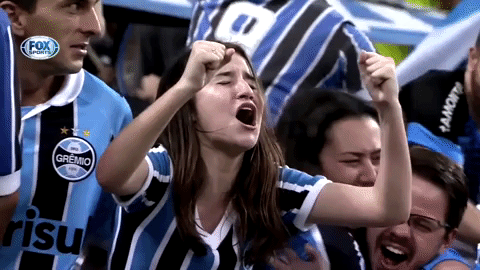
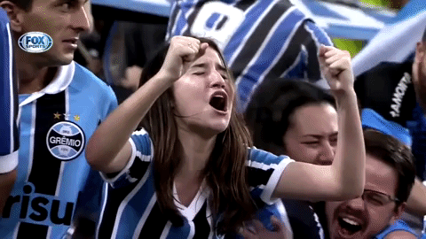

Nossa história

Após o esvaziamento da bola da partida, o paulista Candido Dias da Silva, um comerciante sorocabano, emprestou a pelota que trazia. Em troca do favor, ele recebeu lições de como se fundar um clube de futebol; oito dias depois, trinta e dois homens se reuniram no Salão Grau, restaurante de um hotel da rua 15 de Novembro (atual Rua José Montauri), no Centro de Porto Alegre e fundaram o Grêmio Foot-Ball Porto Alegrense. O primeiro jogo do recém fundado clube ocorreu em 6 de março de 1904, contra o FussBall Club Porto Alegre, fundado no mesmo dia que o Grêmio. Em uma jornada dupla (dois jogos na mesma tarde), o Grêmio garantiu as suas duas primeiras vitórias, vencendo ambas por 1 a 0. Em 20 de julho de 1904, o uniforme foi mudado para um modelo metade azul metade preto. A primeira competição disputada foi a Taça Wanderpreiss, com a primeira edição em 6 de março de 1904, vencido pelo Grêmio contra o Fussball Club Porto Alegre. Alguns anos depois, em 18 de julho de 1909, o primeiro jogo contra o Sport Club Internacional, que mais tarde se tornaria o seu arquirrival, foi disputado, com vitória de 10 a 0 para os tricolores. No ano seguinte, foi criada a 1ª Liga de Clubes de Porto Alegre, por ideia vinda do Grêmio. Posteriormente, foi realizado o Campeonato Citadino de Porto Alegre, o qual o Tricolor venceu ininterruptamente de 1911 a 1915. Mesmo amador, o clube já jogava contra equipes de outros estados, ou até mesmo países. Na década seguinte, a hegemonia do clube continuou. O pentacampeonato metropolitano (1919-1923) e o título de três Campeonatos Gaúchos de 1921, 1922 e 1926, Os anos 1930 continuaram dando ânimo ao desenvolvimento do Grêmio. Conquistas como o tetracampeonato de Porto Alegre 1930 a 1933 e o bicampeonato gaúcho 1931 e 1932.
 
